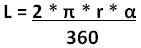
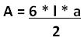
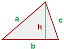

Objetivo:
Que apliques los conocimientos sobre funciones y procedimientos en el
desarrollo de un programa

Forma de trabajo:
Actividad individual

Instrucciones:
- De manera individual, desarrolla el algoritmo y posteriormente el
programa completo en C para cada uno de los ejercicios que se presentan a
continuación.
- Entrega, vía la plataforma, los archivos *.c que contengan los
programas en C. Es importante que al inicio de cada programa coloques el o
los algoritmos que utilizaste.
Ejercicio 1
Construye un programa completo en C libre de warnings y
errores, que incluya las siguientes funciones:
- La función centimetrosPulgadas
que recibe una cantidad en
centimetros y regresa su equivalencia en pulgadas.
El encabezado de la función, podría ser el siguiente:
float centimetrosPulgadas (float centimetros)
{
}
- La función pulgadasPies
que recibe una cantidad en
pulgadas y regresa su equivalencia en pies. Equivalencia 1 ft =
12 in.
El encabezado de la función, podría ser el siguiente:
float pulgadasPies (float pulgadas)
{
}
- La función piesPulgadas que recibe una cantidad en pies y regresa su equivalencia en
pulgadas.
El encabezado de la función, podría ser el siguiente:
float piesPulgadas (float pies)
{
}
- El procedimiento
unidadesDistancia, que despliegue el siguiente menú en pantalla:
.
UNIDADES DE DISTANCIA
A. pulgadas a centimetros
B. centimetros a pulgadas
C. pulgadas a pies
D. pies a pulgadas
S. Salir.
- En la sección del "main()" construya un programa completo en C que utilice el
procedimiento
unidadesdDistancia para desplegar el menú correspondiente y
de acuerdo a la opción seleccionada por el usuario utiliza la función
apropiada de las implementadas anteriormente, para calcular la equivalencias
de las unidades de longitud. Utiliza el estatuto de control Switch.
En cada caso del switch se debe llamar a la función correspondiente.
- Recuerda que la captura de datos y validación de valores debe ser
realizada en la sección del "main ( )", pues las funciones NO pueden
realizar las tareas de validación o captura de datos.
- Si se selecciona la opción S (Salir), el programa deberá
terminar su ejecución. (Utiliza la función _exit(0); de la librería
stdlib.h
- Nota que las opciones del menú son alfabéticas y el usuario podrá
seleccionar la opción del menú presionando la letra mayúscula o minúscula
correspondiente.
- Incluye el algoritmo como comentario al inicio del programa.
- Guarda el archivo con el nombre: O1_Matricula.c
Ejercicio 2
- Construye un programa completo en C libre de warnings y errores, que
incluya una función para calcular las superficies o longitudes de cada una de
las siguientes figuras:
.
El encabezado de la función, podría ser el siguiente:
float arco (float radio, float angulo)
{
}


Polígono regular
El encabezado de la
función, podría ser el siguiente:
float
poligono(float l, float a)
{
}


Triángulo
El encabezado de la
función, podría ser el siguiente:
float triangulo
(float b, float h)
{
}


- El procedimiento figuras, que despliegue el siguiente menú en pantalla:
FIGURAS GEOMÉTRICAS
1. Arco
2. Polígono
3. Triángulo
4. Salir
.
- En la sección del "main()" construya un programa
completo en C que utilice el procedimiento figuras para desplegar el
menú correspondiente y de acuerdo a la opción seleccionada por el usuario
utiliza la función apropiada de las implementadas anteriormente, para
calcular la equivalencias de las unidades de longitud. Utiliza el estatuto
de control Switch. En cada caso del switch se debe llamar a la
función correspondiente.
- Recuerda que la captura de datos y validación de valores debe ser
realizada en la sección del "main ( )", pues las funciones NO pueden
realizar las tareas de validación o captura de datos.
- Si se selecciona la opción 4 (Salir), el programa deberá
terminar su ejecución. (Utiliza la función _exit(0); de la librería
stdlib.h
- Declara PI=3.141592 como constante global.
- Nota que las opciones del menú son numéricas.
- Incluye el algoritmo como comentario al inicio del programa.
.
- Guarda el archivo con el nombre O2_Matricula.c

Especificaciones de entrega:
- Formato de entrega: c
- Nombre de los entregables:
O1_matrícula.c y O2_matrícula.c
- Medio de entrega: Se entrega
en Canvas en la sección de Tarea: Funciones
Instrucciones para enviar tus archivos por Canvas:
- Haz clic en la actividad de
Tarea: Funciones
- Haz clic en el botón de
Entregar tarea.
- En el fólder de Carga
del archivo, haz clic en el botón de Examinar
y localiza el archivo *.py. Si necesitas agregar más
archivos, haz clic en +Agregue otro archivo, haz
clic en el botón de Examinar y localiza el otro
archivo *.py.
- Cuando hayas terminado de
subir tus archivos, haz clic en el botón de Entregar
tarea y listo!!
|